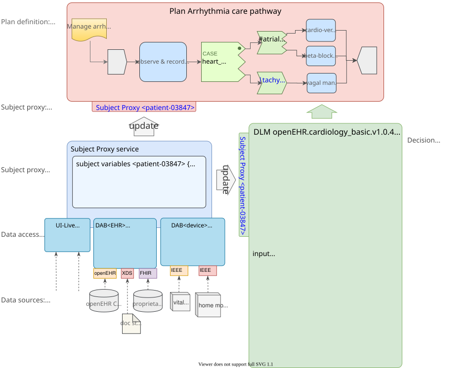
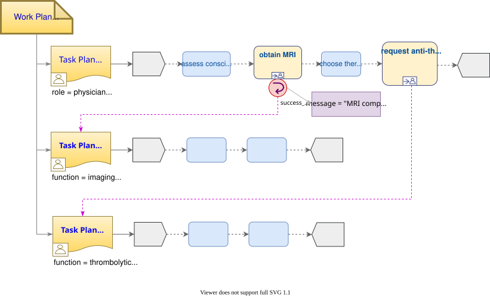
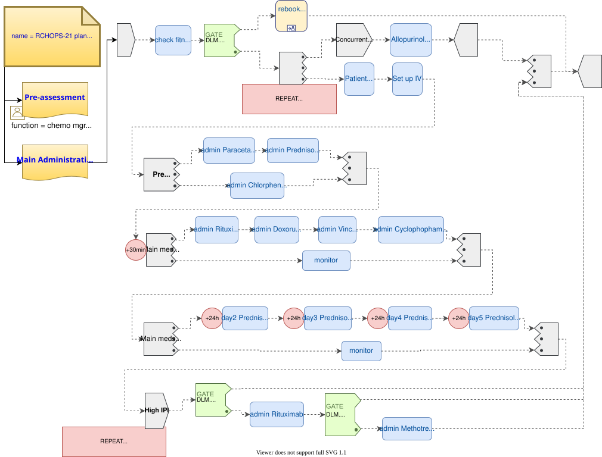

Conceptual Architecture
Overview
Within [care_mgt_artefact_relations], CIGs (computer-interpretable guidelines) are shown as the principal computable artefact of interest for the development of automatable clinical plans. This section describes the conceptual architecture of this artefact in some detail.
The primary formal elements of (CIGs) are the plan, i.e. a structured representation of tasks to be performed including decision points, and the decision logic, whose rules provide values for decisions, as well as declarations of subject variables. These are respectively denoted Plan Definition (or just 'plan') and Decision Logic Module (DLM).
Plans are formally defined by the openEHR Task Planning model, and visualised (including for authoring purposes) in Task Plan Visual Modelling Language (TP-VML). DLMs are written in the openEHR Decision Language (DL), which is a high-level syntax.
Both of these artefacts contain references to subject variables, i.e. ontic (real-world) subject state, such as date_of_birth, weight, systolic_BP and so on. Some of these variables are unchanging in time (e.g. date of birth; sex) or nearly so (height, in adults; type 1 diabetic status), while others are time-varying and may need to be tracked over time. Tracking subject variables over time might entail near real-time (i.e. seconds, minutes) update from measuring devices or simply repeated querying for routine measurements over time from the patient record. A collection of subject variables relevant to plans and DLMs is termed a Subject Proxy, i.e. a proxy representation of a real world subject (such as a patient) for use by plans, DLMs and other applications.
In order to execute a plan and its related logic, a means of populating a subject proxy is therefore required. This is termed a Subject Proxy Service. Within such a service, bindings to particular source sytems (queries, API calls etc) are installed, which are denoted here Data Access Bindings (DABs). The following diagram illustrates these conceptual artefacts.

Plans
In the above, the top box (pink) illustrates a plan definition, used to express a structured set of tasks. In openEHR these are expressed as Work Plans, defined by the openEHR Task Planning specification. Work plans are used for various scenarios, including:
-
long term management plans unfolding over a time period in which personnel constantly change, and the plan is the main record of work done / to do;
-
highly detailed actions defined by clinical pathways for complex conditions such as sepsis, where the complexity level is beyond unaided cognitive capacity;
-
reminders and checklist items for basic actions that are sometimes missed or forgotten due to busy workplace and fatigue;
-
actions requiring sign-off;
-
coordination of workers in a distributed team;
-
actions that result in recording something in the EHR;
-
actions of varying levels of granularity that are needed in a training mode.
A Work Plan is a complete plan with an associated goal and indications (i.e. clinical pre-conditions), and consists of one or more Task Plans, each being for one performer. The inner structure of a Task Plan consists of Task Groups, various kinds of Tasks (dispatchable and performable) and event wait states. The following illustrates a simplified Work Plan for acute stroke management.

Using this model, plans for any of the above situations can be defined by domain experts using dedicated graphical tools. Work Plans are executed by a plan engine, which connects with workers (generally human, although software agents and autonomous devices may also perform tasks) and acts as a co-pilot for each one, reminding them of tasks and relevant details according to the worker’s process. It also manages coordinating notifications and commits and retrieval to and from the EHR. In this way, it can convert disparate workers with weak communication into an integrated, coordinated team.
The Task Planning model supports various fine-grained mechanisms common in workflow languages, including: five types of task; a task life-cycle that supports completion, cancellation, and abandonment; repeat blocks; parallel and sequential task execution; AND, XOR and various kinds of OR join; wait states triggered by external, calendar-based and internal events; blocking and non-blocking execution threads; condition-gated exception task plans and ad hoc task insertion. Some of these features are visible in the following plan, which is for chemotherapy administration (full version).

One of the key formal elements of a Work Plan is decision points (green nodes in the plan diagrams above), where plan branching occurs, based on conditions and rules that ultimately depend on subject variables. In the openEHR architecture, all such decisional logic is expressed in dedicated Decision Logic Modules (DLMs), rather than within the plan. This ensures all decision conditions are treated as first order knowledge artefacts, rather than being hidden as (possibly duplicated) ad hoc expressions within the plan, where they are difficult to find and maintain.
Decision Logic Modules (DLMs)
In the conceptual model, the box on the lower right (green) represents decision logic modules (DLMs), which express the rules, decision tables etc that encode the decision logic of plans and guidelines. DLMs are used to represent the simplest Boolean conditions such as systolic_blood_pressure >= 140 mm[Hg] used in plans, as well as complex chained logic representing stand-alone guidelines, scores and other rule-based clinical entities. To do this, they must declare subject variables needed for computing the rules and/or needed by client Work Plans or other applications.
The openEHR decision logic language may be characterised as a function-oriented logic that typically represents deductive inferences, such as clinical classification of patients (including diagnosis), based on input variables representing known facts about the subject (i.e. patient). These include results obtained from real world observation, measurement, imaging etc, as well as previous confirmed diagnoses and records of previous procedures. Other kinds of reasoning may be used as well, including Bayesian and other statistical and Artificial Intelligence (AI). In the latter case, DLM functions make calls to appropriate specialised services.
DLMs are written in the openEHR Decision Language (DL) consists of various formal elements, including:
-
input variables: declarations of subject-related variables that are referenced within the conditions and rules;
-
conditions: Boolean-valued simple rules based directly on subject variables;
-
rules: complex rules generating non-Boolean values;
-
rule-sets: collections of rules that operate on a common set of input variables to generate a common set of output values; may be represented as 2-dimensional decision tables;
-
output variables: intermediate rule results that may be inspected by calling components.
Conditions, rules, rule-sets and other inference-generating structures that may include them constitute fragments of knowledge that need to be able to be authored and change-managed independently from contexts that use them, rather than being directly written into (say) if/then/else logic chains as a programmer would typically do. This specification accordingly provides a representational form for such logic, along with mechanisms that connect them to data access services (e.g. EHR) and also enable them to be invoked by user contexts (e.g. workflow engines).
An extract from the DLM corresponding for the RCHOPS chemotherapy plan shown above is as follows (full version)
dlm RCHOPS21
language
original_language = <[ISO_639-1::en]>
description
original_author = <
["name"] = <"Dr Spock">
...
>
details = <
["en"] = <
purpose = <"NHS CHOPS-21 chemotherapy guideline ....">
...
>
>
use
BSA: Body_surface_area
preconditions
has_lymphoma_diagnosis
reference
rituximab_dose_per_m2: Quantity = 375mg
...
cycle_period: Duration = 3w
...
input -- State
has_lymphoma_diagnosis: Boolean
input -- Tracked state
staging: Terminology_term «ann_arbor_staging»
currency = 30 days
time_window = tw_current_episode
neutrophils: Quantity
currency = 3d
ranges =
----------------------------------
[normal]: |>1 x 10^9/L|,
[low]: |0.5 - 1 x 10^9/L|,
[very_low]: |<0.5 x 10^9/L|
----------------------------------
;
...
rules -- Conditions
high_ipi:
Result := ipi_risk ∈ {[ipi_high_risk], [ipi_intermediate_high_risk]}
rules -- Main
|
| patient fit to undertake regime
|
patient_fit:
Result := not
(platelets.in_range ([very_low]) or
neutrophils.in_range ([very_low]))
doxorubicin_dose: Quantity
Result := doxorubicin_dose_per_m2 * BSA.bsa_m2
* case bilirubin.range in
===================
[high]: 0.5,
[very_high]: 0.25,
[crit_high]: 0.0
===================
;
...
|
| International Prognostic Index
| ref: https:|en.wikipedia.org/wiki/International_Prognostic_Index
|
ipi_raw_score: Integer
Result.add (
---------------------------------------------
age > 60 ? 1 : 0,
staging ∈ {[stage_III], [stage_IV]} ? 1 : 0,
ldh.in_range ([normal]) ? 1 : 0,
ecog > 1 ? 1 : 0,
extranodal_sites > 1 ? 1 : 0
---------------------------------------------
)
ipi_risk: Terminology_code
Result :=
case ipi_raw_score in
=======================================
|0..1| : [ipi_low_risk],
|2| : [ipi_intermediate_low_risk],
|3| : [ipi_intermediate_high_risk],
|4..5| : [ipi_high_risk];
=======================================
;
terminology
term_definitions = <
["en"] = <
["paracetamol_dose"] = <
text = <"paracetamol dose">
description = <"paracetamol base dose level per sq. m of BSA">
>
["chlorphenamine_dose"] = <
text = <"chlorphenamine dose">
description = <"chlorphenamine base dose level per sq. m of BSA">
>
...
>
>
Subject Proxy
Plans and decision logic necessarily require a way of defining and expressing their input variables. This is not just a question of creating typed variables, but of their semantics. The 'variables' used in plan tasks (e.g. for display) and DLM rules represent an ontic view of the subject, that is, as close as possible to a true description of its state in reality. For example, a rule for inferring atrial fibrillation and other forms of arrhythmia may refer to the input variables heart_rate and heart_rhythm. The meaning of these variables is that they represent the real heart rate and rhythm of the patient, rather than being just any heart rate, e.g. from a measurement 3 years ago recorded within a particular EMR system. Similarly, a variable is_type1_diabetic represents a proposition about the patient in reality.
To make decision logic comprehensible to (and therefor authorable by) domain experts, subject variable names need to be close to the language of the domain, for example is_type1_diabetic and has_family_history_of_breast_cancer are things a clinical professional directly understands. Semantically, they tend to be highly precoordinated forms of more technical representations, e.g. problem_list.contains (type = 73211009|diabetes mellitus|, status=confirmed) which should of course be hidden in implementations.
Conceptually, the collection of subject variables of interest to a plan or DLM is a subject proxy, i.e. a (generally partial) proxy view of a subject in reality, such as a real patient. Accordingly, in openEHR conceptual framework for care pathways and guidelines, two subject proxies are shown, attached respectively to the plan definition and the DLM, i.e. in the application execution context. These proxies maintain copies of variables needed by the executing plan and its logic modules. The proxies are connected to a Subject Proxy Service, which extracts data from back-end systems and other sources, and updates the proxies over time.
Subject Proxy Service
Extraction of subject state from its sources is managed by a Subject Proxy service. Data Access Bindings (DAB) are required within the service to extract data from specific data sources and repositories (i.e. via specific queries, APIs etc), such as patient health records, lab systems and monitoring devices. Where data is not available from these sources, users may be requested to provide it.
The Subject Proxy Service performs a number of jobs, which taken together, have the effect of 'lifting' data from the typically complex IT environment, and converting it to a clean representation of specific subject attributes relevant to specific applications, including CIGs and Decision Support. These jobs are described below.
Semantic Reframing: from the General and Epistemic to the Ontic and Use-specific
The relationship between guidelines and data exhibits a number of semantic characteristics that lead to the concept of the Subject Proxy as an independent interfacing service.
In order to define a care pathway or guideline (possibly adapted into a patient-specific care plan), various subject subject variables and events are needed. Since guidelines are specific to purpose, the number of variables is typically low, and for many simpler guidelines, as few as three or four. Many guidelines need access to common variables such as 'sex', 'age', basic clinical classifiers such as 'is diabetic', 'is pregnant' and then a relatively small number of condition-specific variables representing patient state (e.g. 'neutrophils', 'ldl') and specific diagnoses (e.g. 'eclampsia', 'gestational hypertension'). A guideline of medium complexity, such as for RCHOPS (non-Hodgkins lymphoma) chemotherapy needs around 20 variables, and a complex guideline such as for sepsis might need 50 - 100.
These small numbers are in contrast to the total number of distinct types of data point that will be routinely recorded for an average subject over long periods and relating to all conditions, which is in the O(1k) range, or the number of such data points recorded for a population, e.g. all inpatients + outpatients of a large hospital, which is O(10k). The latter corresponds to the variety of data that a general EMR product would need to cope with. The 'data sets' for specific guidelines are thus small and well-defined in comparison to the data generally captured within a patient record over time, and thus candidates for encapsulation.
Data set size is not the only distinguishing characteristic of a computable guideline. Where variables such as 'systolic blood pressure', 'is diabetic' and so on are mentioned in guidelines, they are intended to refer to the real patient state or history, i.e. they are references to values representing ontic entities, independent of how they might be obtained or stored. This is in contrast with the view of data where it is captured in health records or documents, which is an epistemic one, i.e. the result of a knowledge capture activity. Consequently, a query into a departmental hospital system asking if patient 150009 is diabetic, indicates that the patient is diabetic in the case of a positive answer, but otherwise probably doesn’t indicate anything, since the full list of patient 150009’s problems is often not found in departmental systems.
A query into any particular epistemic resource, i.e. a particular database, health record system or document only indicates what is known about the subject by that system. A true picture of the patient state can be approximated by access to all available data stores (e.g. hospital and GP EMR systems), assuming some are of reasonable quality, and is further improved by access to real-time device data (e.g. monitors connected to the patient while in hospital, but also at home). The best approximation of the ontic situation of the patient will be from the sum of all such sources plus 'carers in the room' who can report events as they unfold (patient going into cardiac arrest), and the patient herself, who is sometimes the only reliable origin of certain facts.
This epistemic coverage problem indicates a need which may be addressed with the Subject Proxy, which is to act as a data 'concentrator', obtaining relevant data from all epistemic sources including live actors to obtain a usable approximation of true patient state. This is a practical thing to do at the guideline / plan level by virtue of the small sizes of the variable sets. The data concentrator function is described in more detail below.
Comprehensive coverage of all possible sources is not the only problem to solve in order to define variables for use in guidelines and plans. In formal terms, symbolic references appearing at different levels in the environment have different semantics. Within the EHR system S1 for example, a generic API call has_diagnosis(pat_id, x) has the meaning: 'indicates whether patient P is known to have diagnosis x, according to S1'. However, within a guideline related to pregnancy, a variable is_diabetic defined in a Subject Proxy is more convenient, and is intended to represent the true diabetic state (or not) of the patient. The Subject Proxy Service thus not only has the effect of data concentration in order to extract a true ontic picture of the subject, but it reifies technical data access calls into ontic variables, specific to the guideline. In some cases, such variables might have pre-coordinated names such as previous_history_of_eclampsia, combining a temporal region with a substantive state.
Manually Reported and Missing Data
A Subject Proxy acts as a data concentrator, providing a single interface to all available sources of information about the subject. In a typical in-patient or live-encounter (e.g. GP visit) situation, these include:
-
the EMR system providing the institutional patient record;
-
any shared (e.g. regional or national) EHR system providing e.g. summary and/or emergency data;
-
devices attached to the patient, e.g. vital signs, pulse oximeter etc.
In many cases, a variable required by an application, e.g. sufficiently recent patient weight, is not available from the EMR/EHR or from any other source. This is a common problem in all decision support environments, and the usual solution is that an application window is displayed to ask the clinician for the data directly. This may be entered (e.g. after weighing the patient or asking the patient for his last weight), saved into the EMR, and the original request retried. Traditionally, this data request 'loop' has been engineered into either the main EMR application or into the decision support component. It is however a general problem and can be conveniently solved in a generic way using the Subject Proxy.
Further, there are some subject state variables and particularly events that are only available 'live' from clinicians working with the patient, e.g. state of consciousness, occurrence of a post-heart surgery heart attack (requiring emergency cardiac shock and/or re-sternotomy), haemorrhage during childbirth etc. Such events can only be realistically asserted 'in the room' by a clinician, potentially via a voice interface.
Consequently, we can say that the following constitute two more routine data sources for a Subject Proxy:
-
just-in-time UI capture of missing data;
-
manually-reported events 'in the room'.
The effect of data concentration in the Subject Proxy is that the plan, decision support, and all other applications can rely on a single location to obtain patient state and events, even where the relevant underlying data are not (yet) available in source systems. Additionally, 'live' data obtained by such methods may be written to the relevant EMR and/or EHR by the Subject Proxy, removing the problem of other applications having to make ad hoc writes, following ad hoc data capture.
Type Conversion
A natural consequence of obtaining data from multiple sources is that the data will be instances of different concrete models (e.g. HL7 messages, documents and FHIR resources; openEHR query results; proprietary EMR data etc). It is also the case that the requesting plan-based and decision-support applications can work effectively with a relatively stripped down system of data types and limited structures. The latter is due to the fact that although data tend to be captured in larger structures such as full blood panels, full vital signs data sets and so on, guidelines and plans tend to require only specific lab analytes (e.g. troponin for investigating possible heart attack) and vital signs, e.g. systolic blood pressure (no need for diastolic pressure, patient position or other details).
The consequence of this is that the type system required at the Subject Proxy level may be significantly simplified compared to the type systems and structures in which data are originally captured. The use of subject proxy variables as the interface for decision support and plan applications to back-end systems greatly simplifies the artifacts needed in the latter components.
The Temporal Dimension: Currency
Another common problem traditionally handled by individual applications, including decision-support, is the currency of data, i.e. its 'recency'. Some variables such as body height are sufficiently current even when measured years earlier, while others such as oxygen saturation and heart rate need to be less than say 15 minutes old to be useful. To obtain valid values, applications often implement a scheme based on polling, automated server-side 'push' query execution, publish-subscribe or other mechanisms to obtain current data. None of this funcionality can really be avoided, but the Subject Proxy provides a single place to locate it, such that client applications simply access the SPO variables they need, and the SPO takes care of the update problem.